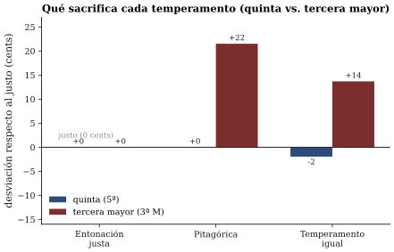

La respuesta al ticket es no; algo hay que sacrificar. Las distintas
maneras de elegir el sacrificio son, precisamente, los
temperamentos.
La respuesta al ticket es no; algo hay que sacrificar. Las distintas
maneras de elegir el sacrificio son, precisamente, los
temperamentos.Sesión 09 · Curso Acústica Musical UC Objetivos que cubre: OA2.3 (fundamento perceptual de la consonancia, las escalas y los temperamentos, demostrado audiblemente), OA1.2 (razones de frecuencia y cents con aritmética simple), OA5.2 (la escala del objeto del proyecto, serie de mediciones s08–s12).
La sesión pasada dejó establecido que la lisura de un intervalo no es un capricho: cuando suenan dos notas reales — dos tonos complejos con sus familias de armónicos — cada par de parciales vecinos puede coincidir, esquivarse o rozar dentro de una banda crítica. La octava y la quinta suenan lisas porque sus parciales coinciden o se esquivan limpiamente, y esa coincidencia exige algo muy preciso: que las fundamentales estén en una razón de números enteros pequeños. Si la nota aguda vibra exactamente 3 veces por cada 2 vibraciones de la grave (razón 3:2), entonces el tercer armónico de la grave y el segundo de la aguda caen en la misma frecuencia y no baten. Si la razón es 1,498 en lugar de 1,5, esos dos parciales quedan separados por unos pocos hertz — y usted ya sabe, desde s07, exactamente qué se oye entonces: un batido lento, contable con reloj.
De ahí la primera idea de esta sesión: un intervalo musical es una razón de frecuencias, no una diferencia. La octava es “por dos” (2:1), la quinta “por 3/2”, la cuarta “por 4/3”, la tercera mayor dulce “por 5/4”. Y como los intervalos se apilan multiplicando (una octava sobre otra octava es “por 4”, no “más 2”), la aritmética de la afinación es una aritmética de razones.
Su ticket de salida de s08 preguntaba: si la quinta lisa es 3:2, ¿puede un piano tener todas sus quintas lisas a la vez? La respuesta se decide con una multiplicación. Parta de un Do y apile quintas: Do–Sol, Sol–Re, Re–La… Tras 12 quintas el nombre de la nota vuelve a ser Do — siete octavas más arriba. Si cada quinta fue justa, la frecuencia se multiplicó 12 veces por 3/2; si las octavas mandan, debió multiplicarse 7 veces por 2. Pero
Las dos escaleras no llegan al mismo piso (figura 1). El sobrante — esa razón de 129,75 a 128 — se llama coma pitagórica, y es la grieta estructural de todo sistema de 12 notas: es aritméticamente imposible que las 12 quintas sean justas y las octavas también.
La respuesta al ticket es no; algo hay que sacrificar. Las distintas
maneras de elegir el sacrificio son, precisamente, los
temperamentos.
Para discutir sacrificios tan finos conviene una regla más cómoda que las razones. El cent divide el semitono del temperamento igual en 100 partes iguales: un semitono son 100 cents, una octava 1200, y — esta es su gracia — apilar intervalos es sumar cents, no multiplicar razones. Con esa regla, la quinta justa 3:2 mide ~702 cents, y la cuenta de la coma se vuelve una suma de colegio:
Sobran ~24 cents (el valor fino es 23,5): la coma pitagórica es aproximadamente un cuarto de semitono. No es un error sutil de laboratorio; una nota corrida un cuarto de semitono está francamente desafinada para cualquier oído entrenado.
Recuadro opcional (para quienes vienen de ingeniería). La definición general es logarítmica: el intervalo entre y mide cents — por eso sumar cents equivale a multiplicar razones. Dos reglas rápidas de conversión: un 1 % de desviación de frecuencia son ~17 cents, y alrededor de La4 = 440 Hz un cent corresponde a ~0,25 Hz. Verifique con ellas los números de este apunte.
El temperamento igual — el del piano moderno y el de casi toda la música que usted escucha — elige el sacrificio más democrático: reparte la coma en partes iguales entre las 12 quintas. El impuesto por quinta es 23,5/12 ≈ 2 cents: cada quinta del piano está estrechada 2 cents respecto de la justa (700 en lugar de 702). Ninguna quinta es lisa; todas son usables; todas las tonalidades suenan igual.
¿Y cómo se afina algo con precisión de 2 cents, sin pantalla ni electrónica? Con el fenómeno que este curso viene cultivando desde s07: los batidos. Tome la quinta Do4–Sol4. El par de parciales que casi coincide es el tercer armónico de Do4 (785 Hz) contra el segundo de Sol4 (784 Hz): la quinta temperada late ~0,9 veces por segundo. Un afinador profesional hace exactamente eso: primero busca el punto sin batidos (la quinta justa) y desde ahí estrecha el intervalo hasta que el batido corre a la velocidad prescrita — alrededor de un batido por segundo en el registro central (Benade 1990, sec. 16.2 describe el procedimiento completo). El batido convierte al oído en un instrumento de medición más fino que cualquier juicio directo de altura: distinguir 700 de 702 cents escuchando dos notas sueltas es casi imposible; contar un batido por segundo es trivial.
En el taller usted hizo ambas cosas — anular el batido y luego sembrarlo a razón de ~1 por segundo — y el mapa del pizarrón mostró cuánto se agrupan los resultados del curso en torno a 702 y 700.
Curiosidad verificable: los batidos de una quinta desafinada se oyen incluso con tonos puros, cuyos parciales “que chocan” no existen en el aire. Son los batidos de segundo orden: los fabrica el procesamiento del propio sistema auditivo (Roederer 1997, sec. 2.6). Otro recordatorio — tras los tonos de combinación de s08 — de que no todo lo que se oye está en la señal.
El temperamento igual esconde bien el sacrificio de las quintas (2 cents, un batido lento) pero lo paga caro en otra parte: la tercera mayor. La tercera dulce de la entonación justa es 5:4 ≈ 386 cents; la del temperamento igual mide 400 — 14 cents más ancha, y su par de parciales en colisión (el 5.º de la nota grave contra el 4.º de la aguda) late unas 10 veces por segundo en el registro central: no un vaivén, una vibración áspera. Las terceras del piano muelen, y llevan tres siglos moliendo; el oído occidental está tan acostumbrado que en el gancho de la sesión buena parte del curso votó por la tercera temperada como “la afinada”.
Los sistemas históricos eligieron otros repartos (figura 2). La afinación pitagórica (quintas justas, hasta que una — la “quinta del lobo” — absorbe toda la coma) tiene terceras aún más anchas: 81:64 ≈ 408 cents. La entonación justa construye terceras perfectas 5:4, pero el precio es que algunas quintas y algunos transportes quedan inutilizables: sirve para un coro que ajusta en tiempo real, no para un teclado de afinación fija.

Y los temperamentos circulantes del barroco — Werckmeister es el ejemplo clásico — reparten la coma en partes desiguales: todas las tonalidades funcionan, pero cada una queda con proporciones levemente distintas, con su “color” característico (Benade 1990, sec. 16.3–16.4). Cuando un texto de la época habla del carácter de Mi bemol mayor, no es pura poesía: en ese teclado, las tonalidades medían distinto.Una última convención que conviene desnaturalizar: el propio La4 = 440 Hz es un acuerdo histórico, no una constante física — el estándar de altura ha variado ampliamente entre épocas y ciudades (Roederer 1997, sec. 5.4). La física no fija ni el punto de partida ni el reparto de la coma; fija solamente qué batirá y cuánto, según la regla que se elija.
Todo lo anterior supone parciales exactamente armónicos (). Pero usted sabe desde s04 que las cuerdas reales tienen rigidez, y sus parciales corren levemente agudos. Consecuencia práctica: si un afinador deja una octava del piano sin batidos — alineando el segundo parcial real de la nota grave con la fundamental de la aguda —, esa octava queda un poco más ancha que 2:1. Hecho esto a lo largo de todo el teclado, los extremos del piano se apartan varios cents de la regla nominal: es la afinación estirada, y no es un defecto sino la decisión correcta — un piano afinado “exacto” por frecuencias batiría consigo mismo (Benade 1990, sec. 16.5; Campbell & Greated 1987, cap. 7). Moraleja del curso: se afina para los oídos y contra los batidos, no para la tabla de frecuencias.
El taller de la serie s08–s12 aplicó todo esto al objeto de su proyecto: medir las alturas que produce (afinador y espectrograma, con las mismas condiciones anotadas que la radiografía de s08), expresarlas como nota + desviación en cents, y decidir si el objeto “vive” en alguna escala — y qué habría que cambiar para afinarlo. La conclusión de los cinco grupos fue la misma y es el puente exacto hacia la próxima sesión: al objeto no se le puede pedir otra frecuencia; hay que cambiarle la física — longitud, tensión, masa, agujeros (OA1.2). Por qué un sistema vibrante insiste en sus frecuencias y desoye las que uno le impone es, precisamente, el tema de s10.
Su ticket de salida quedó preguntando qué determina que un sistema “prefiera” vibrar en sus propias frecuencias. La próxima sesión — que además recibe el hito 2 de su proyecto — responde con el concepto puente de todo el bloque de instrumentos: resonancia. Traiga el objeto y la bitácora al día: la radiografía de s08 y el mapa de escala de hoy son exactamente lo que el hito 2 compila.